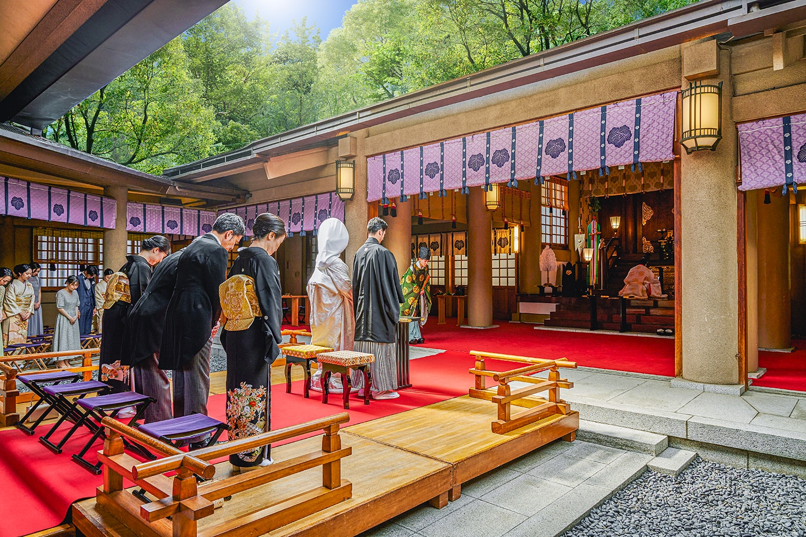
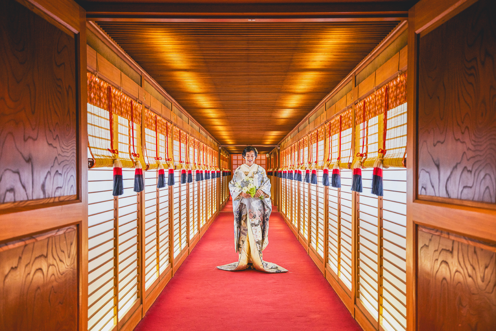

原宿駅3分。
都会の喧騒を離れ、東郷の杜が導く神聖の舞台。 鳥居をくぐるその瞬間、物語が始まります。
和装の美しさも、
ゲストへのおもてなしも――
その両方を叶えたいふたりへ。
“美しい神前式”を叶える
東郷記念館からの
Promise
1
貸切にして行う庭参進の儀
神池に架かる浮橋を進む唯一無二の〈庭参進の儀〉――
１万坪の杜を完全に閉じ、深い緑と雅楽だけが花嫁を包む。
東郷記念館は、都内では稀少な”庭園の完全貸切”
ふたりの誓いに立ち会えるのは、ご招待した大切なゲストだけ。
水面のゆらぎと雅楽の余韻が、
神前式をまるで映画のワンシーンへと導きます。
Promise
2
トータルスタイリング
花嫁を最も美しく映す——
神池の光に合わせて仕立てる、専属スタイリング。
庭参進の一歩一歩に、季節の光や緑が映えるように。
会場を知り尽くしたスタイリストと衣装サロンが、
その場にふさわしい和装やドレスを丁寧にコーディネートします。
Promise
3
自由なウエディングスタイル
6名から130名まで可能な神殿と4つの多彩な披露宴会場。 家族だけの結婚式も、sたくさんのゲストに囲まれての結婚式も。
都内では珍しい友人参列が可能な神殿と隣接する
4つの和モダン会場は和装もドレスも映え、
ケーキ入刀も鏡開きも自在。
地図
MAP
庭園〜神前式〜披露宴まで が同じ敷地内で
完結するため移動ロスはゼロ。
日本庭園
1
写真撮影

日本庭園を貸切にして、この日のために選んだ和装で
写真撮影を。
その季節ならではのお美しいお写真が
残せます。
庭参進

神池から始まる参進は東郷記念館ならでは。
大切なゲストお一人お一人のお顔を見ながら、
雅楽の音色に導かれご本殿正面へと向かいます。
神殿
2
昭和15年創建、
勝運を授かる本殿で叶える本格神前式

勝運・航海安全のご利益で知られる
東郷平八郎ゆかりの社殿は、
80余年、数え切れない夫婦を門出へと
送り出してきた由緒の舞台です。
回廊

挙式後は神社と披露宴会場を繋ぐ
回廊を通りお食事会場へ
ご披露宴会場
3
2024年夏完全リニューアル。一万坪の日本庭園を
望む最新デザインの3つの披露宴会場。
TAMAYURA
玉響
ご縁を大切にした場所として、丸や円がモチーフとするパーティルーム。 屋久杉をふんだんに使用し、窓の向こうには四季折々に色づく庭園が広がります。
JUKO
聚洸

日本の伝統美を感じる本格的な和テイスト 壁と天井の直線美、絨毯は海をイメージした曲線美で日本の伝統感じる空間に。
TENSHO
天翔
「常に上向きで天を翔けるように輝いてほしい」という想いが込められたフロア吹き抜けの 開放感溢れる雰囲気。
お客様のお声
VOICE
2024年11月挙式 Mご夫妻

貸切の庭園で、 ゲストと目が合う参進という贅沢
日本庭園はとにかく圧巻です。そこで参進をおこなうのですが、写真撮影も参進も貸切になります。また、ゲストがつくる花道を通って参進を行うのでひとりひとりと顔を合わせることができてゲストからも好評でした。私たちは元々神社で挙げるのに懸念していたのが「一般の人の見物にならないこと」と「神社の寒さ」でしたがどちらも全く問題なく神前式を考えている方には本当におすすめです。
2024年11月挙式 Mご夫妻
貸切の庭園で、 ゲストと目が合う参進という贅沢
日本庭園はとにかく圧巻です。そこで参進をおこなうのですが、写真撮影も参進も貸切になります。また、ゲストがつくる花道を通って参進を行うのでひとりひとりと顔を合わせることができてゲストからも好評でした。私たちは元々神社で挙げるのに懸念していたのが「一般の人の見物にならないこと」と「神社の寒さ」でしたがどちらも全く問題なく神前式を考えている方には本当におすすめです。
画像を選択すると切り替わります